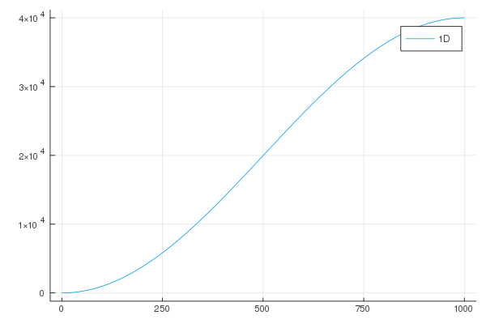
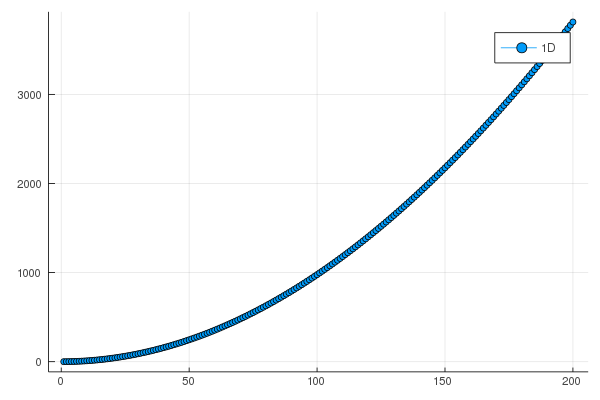
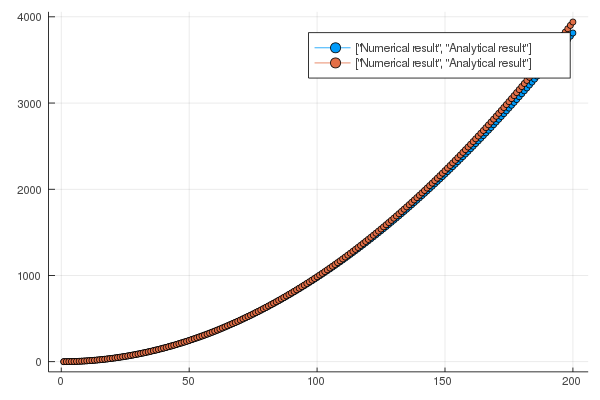
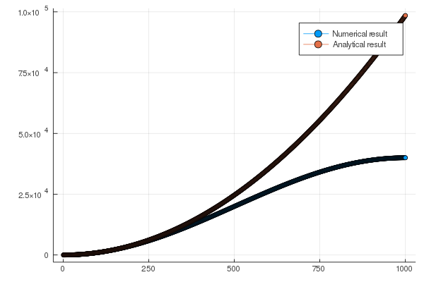
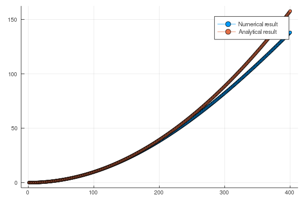

Juliaで学ぶ量子力学
時間に依存しないシュレーディンガー方程式を解いてみよう。 数値計算的な考え方でシュレーディンガー方程式を眺めてみる。
シュレーディンガー方程式の解
一次元系のシュレーディンガー方程式は、
と書ける。この方程式は二階微分方程式なので、一般解には二つの未定定数が含まれ、それらの定数を決定するためには、この方程式の他に二つの方程式が必要となる。
標準的なやり方
未定定数
これをはっきりさせるため、一番簡単な場合($V(x)=0)$を考えてみよう。 この時のシュレーディンガー方程式は
となる。 この方程式の解として指数関数：
を仮定すると、
となるので、
すなわち、
が得られる。以上から、二つの関数
が方程式の解であることがわかった。 そして、容易に確認出来るように、二つの解を足した解も解である。つまり、
も解である。よって、解は$C_1$と$C_2$という未定定数を二つ持つことがわかった。 これは、上述したように、方程式が二階微分方程式であるからである。 また、エネルギー$\epsilon$には、現時点では何も条件が課されていないため、任意の実数を取ることができる。 そしで、もし$\epsilon < 0$であれば、$k$は純虚数となる。
境界条件
上述の解の係数を決めたい。 まず、波動関数の絶対値の二乗は粒子を見出す確率であるので、全空間で粒子を見出す確率は1にならなければならない。 つまり、
である。これを規格化と呼ぶ。 この条件により、未定定数のうち一つが求まることになる。ここでの積分範囲は、考えている系全体である。
片側に壁が存在する場合
$x=0$に壁が存在する場合($\psi(x=0)=0$)を考えよう。この場合、
である必要があり、
となる。ここで、エネルギー$\epsilon$が負の時、sin関数はsinh関数となり、$x \rightarrow \infty$で値が発散してしまう。従って、
という条件が存在する。そして、エネルギーは連続の値を取ることができる。
両側に壁が存在する場合
$x=0$と$x=L$に壁が存在する場合($\psi(x=0)=\psi(x=L)=0$)を考えよう。 片側の壁の条件は全く同じなので、
であり、解は
である。 しかし、この解は$\psi(x=L)=0$を常に満たすわけではない。常に満たすためには、
である必要がある。ここで、$n$は1以上の整数である。もし、$n=0$なら解は常に0になってしまう。よって、
となる。
補足：エネルギーが実数である意味
実は、上述のような解き方では$\epsilon$は複素数であっても構わない。 これは、時間に依存しないシュレーディンガー方程式のみを考えているからである。 もともとの時間依存するシュレーディンガー方程式は
であった。ここで、ポテンシャル$V(x)$が時間に依存しないとすれば、この偏微分方程式は変数分離することができて、解は
と書け、微分方程式は
となり、右辺の定数を$\epsilon$とおけば、
が得られる。 もし、$\epsilon$が複素数であり、虚部が含まれれば、$f(t)$は時間につれて発散あるいは減少する指数関数となり、 解は安定しない。つまり、定常状態の解にはならない。よって、$\epsilon$は実数である必要がある。
行列とベクトル
上述したやり方だと、解の形を指数関数に仮定した。より複雑な問題に対応するためには、どのようにやるのが良いだろうか。 まず、シュレーディンガー方程式を
と書く。ここで、
である。 このような形で書くと、シュレーディンガー方程式は、ハミルトニアン$H$に対する固有値問題であることがわかる。 そして、エネルギーは固有値であり、対応する解は固有関数である。 異なる固有値に属する固有関数は直交し、波動関数の二乗は確率を表すため、規格化されている。つまり、 ある固有値$\epsilon_n$に属する解を$\psi_n(x)$とすると、
となる。これは、直交規格化条件である。ここで、$\delta_{nm}$はクロネッカーのデルタと呼ばれ、$n=m$の時1、$n\neq m$の時0となる関数である。
基底の変換とベクトル表示
さて、シュレーディンガー方程式の解をフーリエ変換で求めてみよう。ある関数$\psi(x)$のフーリエ変換は
と書ける。 これを$V(x)=0$のシュレーディンガー方程式に代入すると、
となり、
となるので、
であれば、解となることがわかる。
次に、フーリエ変換の積分を和とみなすと、幅$dk$、高さ$e^{i k x} c_k$の長方形の面積の和となり、
となる。ここで、$dk$は$c_k$を再定義することで押し付けた。 さて、この形を眺めるとあることに気がつくかもしれない。 線形代数において、ある行列$A$とベクトル${\bf v}$の積でできたベクトル${\bf g} = A{\bf v}$の成分表示は
と書ける。つまり、$\psi(x)$を$g_i$、$e^{i k x}$を$A_{ij}$、$c_k$を$v_j$と見なせば、
と行列とベクトルを使った解を書くことができる。 そして、異なる固有値に属する固有関数は
となる。これは、線形代数において基底を変換する演算そのものである。なお、この$U$はユニタリー行列である。
ここで、線形代数では添字$i$はある離散的な値であったが、座標$x$や$k$は連続的な値であることに注意する必要がある。 ここでは詳しくは述べない。
シュレーディンガー方程式の行列表示
さて、座標$x$を離散化し無数の格子点$x_i$に分割したとする。この時、格子点$x_i$での固有値$\epsilon_n$に対する解の値は$\psi_n(x_i)$である。 この$\psi_n(x_i)$は、ベクトル表記ではどのように表せられるだろうか。 実は、ベクトル${\bf x_i}$:
を用意すれば良い。このベクトルの成分表示は
である。 このベクトルを使うと、
となる。 また、ハミルトニアン$\hat{H}$を格子点上で考える場合には、微分演算子を差分に変更する必要がある。 ある点$x_i$近傍での関数$\psi(x_i \pm a)$は、テイラー展開より
となるので、
と微分を差分に直すことができる。一般的には、ある場所$x_i$における微分演算子は、
と書けるので、シュレーディンガー方程式は、
と書くことができる。 この方程式は、先ほどと同様に行列とベクトルで表現することができて、
となる。これがシュレーディンガー方程式の行列表示である。 ここで、${\bf \psi}_n = U {\bf c}_n$を使えば、
となる。
つまり、xで表現しようがkで表現しようが、演算子$\hat{H}$に対する固有値問題がシュレーディンガー方程式なのである。 そこで、特定の${\bf \psi}_n$や${\bf c}_n$を使わずに、ベクトルとしてケットベクトル$|n \rangle$ を用いることで、
とシュレーディンガー方程式を書くことができる。
座標表示との関係
上記の方程式と元の方程式との関係を見る。 まず、単位行列$\hat{I}$をベクトル${\bf x_j}$で表現すると、
と書ける。 行列表示の方程式にこの単位行列を挟み、左から${\bf x_i}^T$をかけると、
となり、元の方程式が再現される。 また、基底${\bf \psi}_n$、${\bf c}_n$は、互いにユニタリー変換で結びつけられているため、 ベクトル${\bf x_j}$も様々な基底で表現することができる。よって、これをケットベクトル$|x_i \rangle$と書く。 この時、ある基底で書かれた単位行列は
と書ける。ここで、$\langle x_i|$はブラベクトルであり、$\langle \alpha | \beta \rangle$はベクトルの内積を表す。 以上から、
が得られる。
さて、ここで離散化をやめて元の連続座標$x$について考えると、波動関数$\psi_n(x)$は
であり、ハミルトニアンは
となる。
つまり、ベクトル$|n \rangle$に対する座標表示の固有値方程式が、よく見る形のシュレーディンガー方程式だったのである。 そして、うまく解けるように適当に基底を選んでシュレディンガー方程式を解くことができる。 それはフーリエ級数展開でも良いし、ベッセル関数でも良いし、チェビシェフ多項式でも良い。
1次元シュレーディンガー方程式の数値的解法
一番簡単なケースとして、1次元シュレーディンガー方程式を差分化して解いてみよう。 その前に、シュレーディンガー方程式を無次元化しておく。つまり、
としておく。 これにより、計算が容易になる。以後、$x'$は$x$と置き直す。
x軸を間隔$a$の微小な座標点の集合に書き換えるとする。そして、 二階微分を
と差分化する。 この時、シュレーディンガー方程式は
となる。
座標点の数を$N$とする。 境界条件としては、
とする。つまり、両側が壁に囲まれている。 この時、固有値は
である。$L = (N+1)*a$である。
この時のハミルトニアンを作成するJuliaのコードは以下のようになる。
function make_H1d(N,a)
mat_H = zeros(Float64,N,N)
vec_V = zeros(Float64,N)
for i in 1:N
for dx in -1:1
j = i + dx
v = 0.0
if dx == 0
v = (2/a^2 + vec_V[i])
elseif dx == 1
v = -1/a^2
elseif dx == -1
v = -1/a^2
end
if 1 <= j <= N
mat_H[i,j] = v
end
end
end
return mat_H
endこの行列を対角化し、固有値の分布を出してみよう。
まず、プロット用のmoduleを読み込む。
using Plots
gr()Nをいろいろいじってプロットしてみよう。縦軸が非常に大きいことに注意。
using LinearAlgebra #対角化のルーチンeigenを呼ぶ準備 v0.7以降必要
N = 1000
a = 0.01
mat_H = make_H1d(N,a)
ε,ψ = eigen(mat_H)
integers = Int64[]
for i in 1:N
push!(integers,i)
end
plot(integers[1:N],ε[1:N],label="1D")

sn = 200
plot(integers[1:sn],ε[1:sn],label="1D",marker=:circle) 
解析解：
と重ねてみよう。
εa = Float64[]
for n in 1:N
push!(εa,n^2*π^2/(a*(N+1))^2)
end
plot(integers[1:sn],[ε[1:sn],εa[1:sn]],label=["Numerical result","Analytical result"],marker=:circle) 
高エネルギー領域では、ずれる。
sn = 1000
plot(integers[1:sn],[ε[1:sn],εa[1:sn]],label=["Numerical result","Analytical result"],marker=:circle) 
高エネルギーでずれる原因を考える。 今、空間を差分化しており、その間隔$a$より小さい長さスケールのものは記述できない。 つまり、波数$k_{\rm MAX} = 1/a$より大きな波数の物理は記述できない。 この時のエネルギーは、
である。従って、$a=0.01$の時は、$\epsilon > 10000$の領域がずれることになる。 もし、a = 0.1とすると、
N = 1000
a = 0.1
mat_H = make_H1d(N,a)
ε,ψ = eigen(mat_H)
integers = Int64[]
for i in 1:N
push!(integers,i)
end
sn = 400
εa = Float64[]
for n in 1:N
push!(εa,n^2*π^2/(a*(N+1))^2)
end
plot(integers[1:sn],[ε[1:sn],εa[1:sn]],label=["Numerical result","Analytical result"],marker=:circle) 
エネルギーが100以上の部分は合わないことになる。